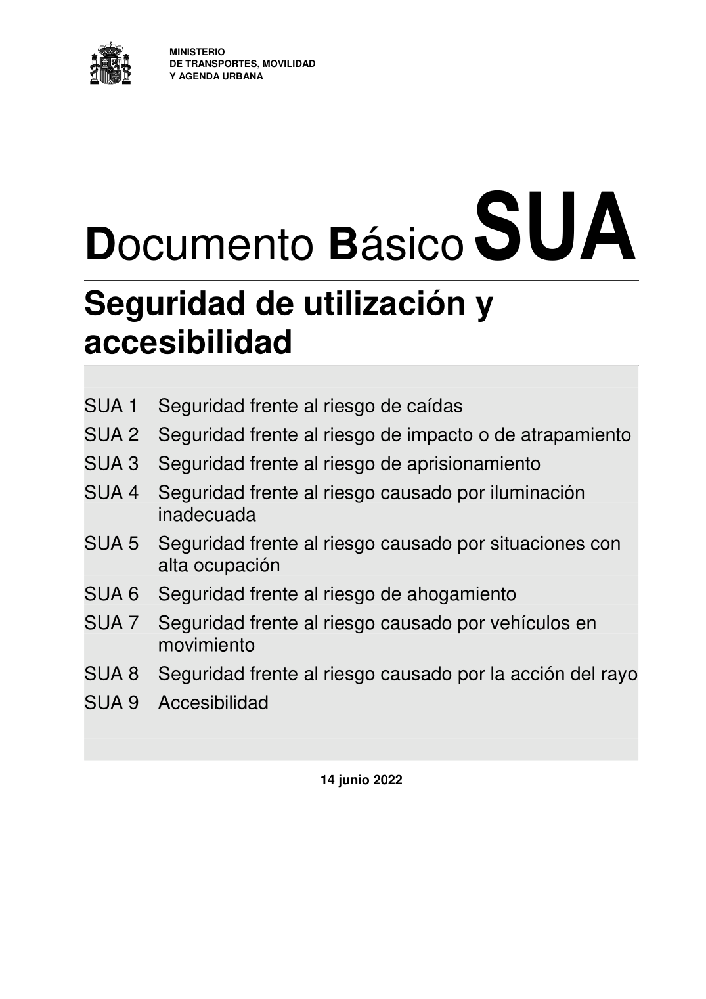

DB-SUA · Página 1 · versión 2022-06-14
SHA256: 3cfb5bbb135e8f02faebd8b844e03e8947994c18d4c9e675a7d2aa37d1cd5958 · página física 1 de 47 · métodos de encabezado
solo si están cotejados.
Formatos: Markdown · JSON de bloques · PDF p. 1 · imagen PNG
MINISTERIO DE TRANSPORTES, MOVILIDAD Y AGENDA URBANA Documento Básico SUA Seguridad de utilización y accesibilidad SUA 1 Seguridad frente al riesgo de caídas SUA 2 Seguridad frente al riesgo de impacto o de atrapamiento SUA 3 Seguridad frente al riesgo de aprisionamiento SUA 4 Seguridad frente al riesgo causado por iluminación inadecuada SUA 5 Seguridad frente al riesgo causado por situaciones con alta ocupación SUA 6 Seguridad frente al riesgo de ahogamiento SUA 7 Seguridad frente al riesgo causado por vehículos en movimiento SUA 8 Seguridad frente al riesgo causado por la acción del rayo SUA 9 Accesibilidad 14 junio 2022
